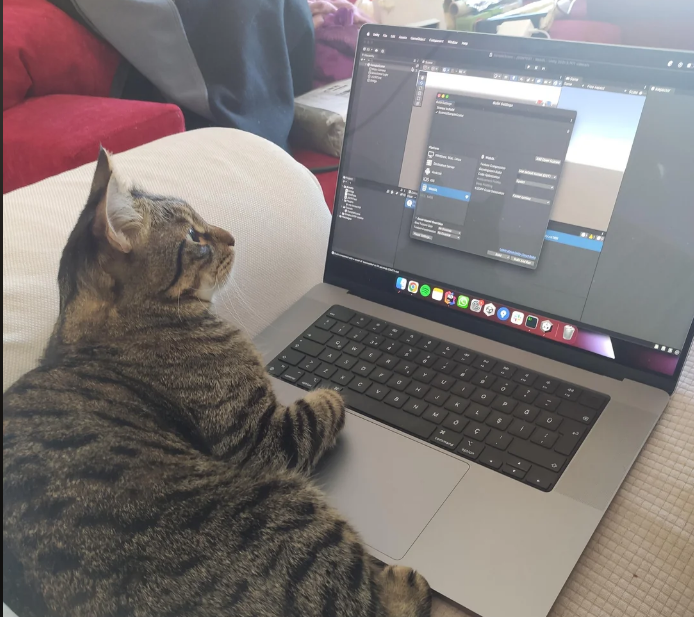

Khaled Sellani

Summary
I'm currently pursuing a master's degree with a focus on Application Security.
Education
- Master Degree in Cybersecurity and Data Science (2023 - 2025) - University of Paris 8
- Master 1 in Big Data (2022 - 2023) USTHB
- Licence Degree in software engineering (2019 - 2022) USTHB
Work Experiences
Software Developer - Python
- participer au développement de script Python permettant
l’extraction du contenu des sites Web en utilisant la bibliothèque
beautifulsoup4.
- faire de la veille technologique en utilisant Feedly et Netvibes.
Stage de Fin d'etudes
- Conception et implémentation d’un gestionnaire électronique des
documents du service centre d’ingénierie des lignes a l’aide de
Alfresco Community.
- Intégrer les options d’archivage et recherches intelligentes sur les
documents en utilisant les filtres et enregistrant les accès dans un
fichier log.
- Intégrer la signature électronique des documents avec un accès
sécurisé des employés.
Skills
- Scripting (JS , Python)
- Problem solving
- Networking
- OS (Linux , Windows)
Awards and certifications
- Microsoft Certified Azure Fundmentals - Microsoft
- Fortinet Network Security 1 - Fortinet
- CCNA - Cisco
Other